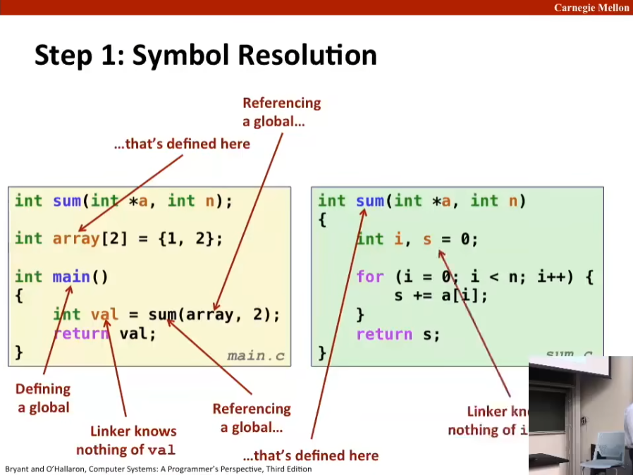
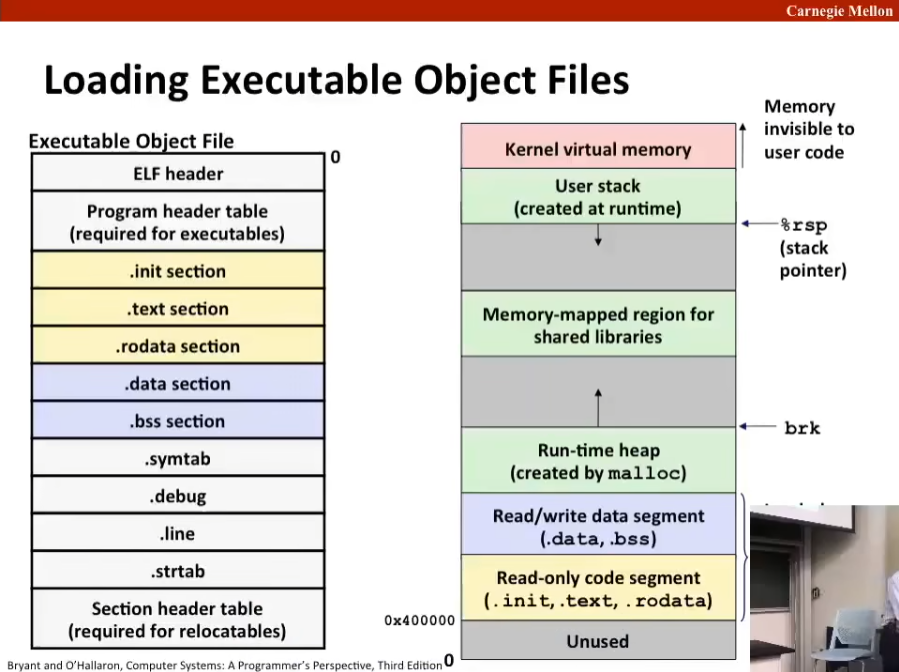
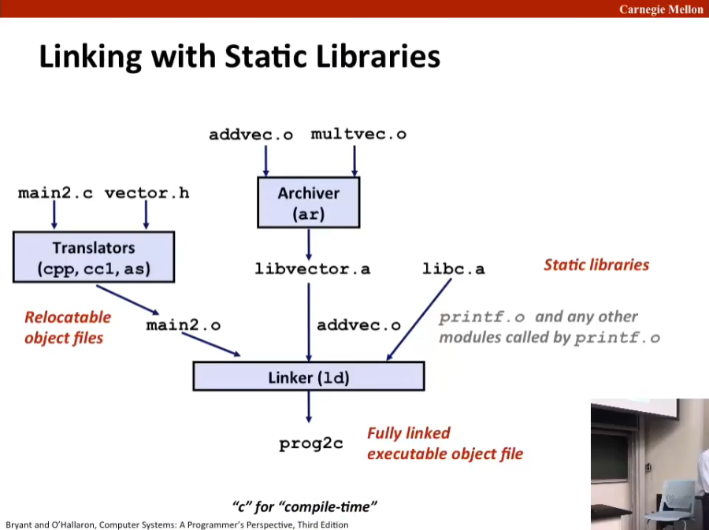
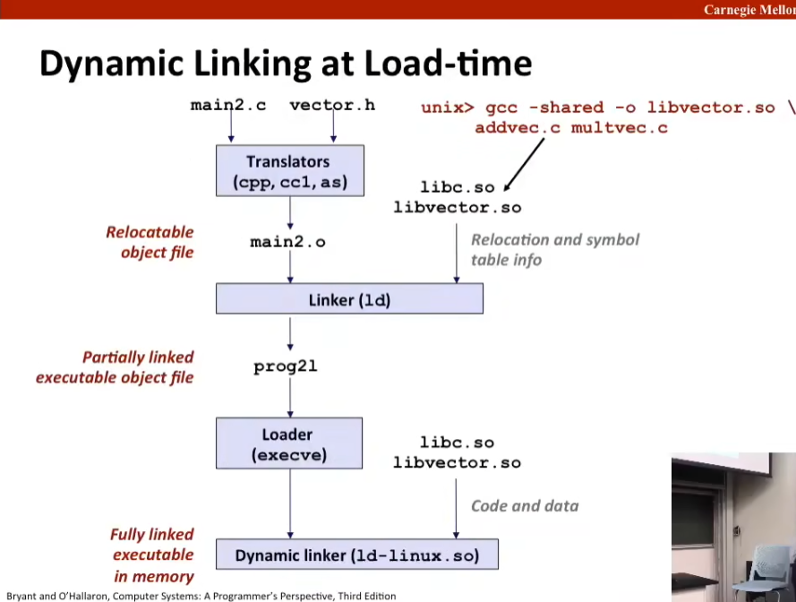

L13 Linking
Source: https://www.bilibili.com/video/BV1iW411d7hd?p=13
Today
链接 -Linking
案例研究：库打桩技术 Case study: Library interpositioning
注：库打桩技术允许你使用链接实际拦截比如 C 标准库这样的库中的函数调用。
C 程序例子 Example C Program
// main.c
int sum(int *a, int n);
int array[2] = {1, 2};
int main() {
int val = sum(array, 2);
return val;
}
// sum.c
int sum(int *a, int n) {
int i, s = 0;
for (i = 0; i < n; i++) {
s += a[i];
}
return s;
}
静态链接 Static Linking
Programs are translated and linked using a compiler driver:
linux> gcc -Og -o prog main.c sum.c
linux> ./prog
main.c sum.c
|Translators(cpp, cc1, as)|
v v
main.o sum.o
| |
v v
---------Linker(ld)--------
|
v
prog
翻译器首先包括 C 预处理器 cpp（将 main.c 翻译成 ASCII 中间文件 main.i）
然后包括编译器，实际上使用的是 cc1（将 main.i 翻译成 ASCII 汇编语言文件 main.s）
然后包括汇编器 as 生成 .o 文件。
所以 .c 文件称为源文件（source file），.o 文件称为目标文件（object files）（separately compiled relocatable object files），Fully linked executed object file (contains code and data for all function defined in main.c and sum.c).
为什么要链接器（为什么要分离编译） Why Linkers?
原因一：模块化 Reason 1: Modularity
程序应该写成小份源代码而不是一个大文件 Program can be written as a collection of smaller source files, rather than one monolithic mass.
Can build libraries of common functions (more on this later)
e.g. math library, standard C library.
原因二：高效 Reason 2: Efficiency
时间上：分开编译 Time: Separate compilatioin
Change one source file, compile and then relink.
No need to recompile other source file.
空间上：库 Space: Libraries
Common functions can be aggregated into a single file...
Yet executable files and running memory images contain only code for the functions they actually use.
链接器做什么？ What Do Linkers Do?
第一步：符号解析 Step 1: Symbol resolution
Programs define and reference symbols (global variables and functions):
void swap() {...} /* define symbol swap */
swap(); /* reference symbol swap */
int *xp = &x; /*define symbol xp, reference x */
符号定义（被汇编器）存储在一个对象表中，称作对象表 Symbol definitionis are stored in object file (by assembler) in symbol table
对象表是一系列结构体数组 Symbol table is an array of structs.
每个结构体都包含了符号的名称、大小、位置等信息 Each entry includes name, size, and location of symbol.
During symbol resolution step, the linker association each symbol with exactly definition.
此处的引用（reference）需与 C 中的引用区别，此处「引用」指访问某个对象的行为。链接器必须决定将其中的某个定义用于所有后续引用。
第二部：重定位 Step 2: Relocation
将所有模块合并到一起 Merges separate code and data sections into single sections.
将符号从 .o 文件中的相对位置重定位到合并到一起的文件中的绝对位置 Relocates symbols from their relative locations in the .o files to their final absolute memory locations in the executable.
（在重定向前目标模块中的函数地址只是它在模块中的偏移量，对于数据也是如此）
更新所有对符号的引用以使其指向正确的地址 Updates all references to these symbols to reflect their new positions.
Let's look at these two steps in more detail...
Three Kinds of Object Files(Modules)
重定向目标文件 Relocatable object file (.o file)
Contains code and data in a form that can be combined with other relocatable object files to form executable object file.
Each .o file is produced from exactly on source (.c code)
（.o 文件是一个二进制文件，不能直接加载）
可执行目标文件 Executable object file (a.out file)
Contains code and data in a form that can be copied directly into memory and then executed.
共享目标文件 Shared object file (.so file)
是一种特殊的重定向目标文件，它可以在加载时或运行时动态加载并链接至内存。Special type of relocatable object file that can be loaded into memory and linked dynamically, at either load time or run-time.
Called Dynamic Link Libraries (DLLs) by Windows.
（这是一种用于创建共享库的现代技术）
现在，目标模块采用称为 ELF 格式的标准格式。
Executable and Linkable Format (ELF)
Standard binary format for object files
One unified format for
Relocatable object files (.o)
Executable object files (a.out)
Shared object files (.so)
Generic name: ELF binaries.
ELF Object File Format
ELF header <- 0
Segment header table (required for executables)
.text section
.rodata section
.data section
.bss section
.symtab section
.rel.text section
.rel.data section
.debug section
Section header
ELF 头 ELF header
Word size, byte ordering, file type (.o, exec, .so), machine type, etc.
定义了（声称该文件系统的）字节顺序和字的大小。
段头部表 Segment header table
只在可执行目标文件中定义。指出代码的所有不同段在内存中的位置。
Page size, virtual addresses memory segments (sections), segment sizes
.text section
Code
由于某种神秘的历史原因，很多代码部分都写作「text」，只读。
.rodata section
只读数据，如：跳转表 Read only data: jump tables, ...
.data section
（定义）已初始化的全局变量。Initialized global variables.
.bss section
（定义）未初始化的全局变量。Uninitialized global variables
bss 的命名来源于 IBM 指令将其称为块符号（block started by symbol）"Block Started by Symbol"
教授认为更好的理解方式是「better save space」。"Better Save Space"
（初始化前）有一个段用于未初始化变量，而它们没有占用 .o 文件中的任何空间。Has section header but occupies no space
.symtab section
Symbol table
Procedure and static variable names
Section names and locations
.rel.text section
Relocation info for .text section
Addresses of instructions that will need to be modified in the executable.
Instructions for modifying.
.rel.data section
Relocation info for .data section.
Addresses of pointer data that will need to be modified in the merged executable.
.debug section
Info for symbolic debugging (gcc -g).
Section header table
Offsets and sizes of each section.
Linker Symbols
全局符号 Global symbols
全局符号在模块 m 中定义，并被其他模块使用。Symbols defined by module m that can be referenced by other modules.
e.g.: non-static C functions and non-static global variables.
外部符号 External symbols
外部符号是被其他模块使用，但由其他模块定义的全局符号。Global symbols that are referenced by module m but defined by some other module.
局部记号 Local symbols
在模块 m 中定义和引用的符号。Symbols that are defined and referenced exclusively by module m.
例如一个全局变量或使用 static 属性声明的函数。e.g.: C function and global variables defined with the static attribute.
Local linker symbols are not local program variables.

Local Symbols
Local non-static C variables vs. local static C variables
local non-static C variables: stored on the stack.
local static C variables: stored in either .bss, or .data
Compiler allocates space in .data for each definition of x. Creates local symbols in the symbol table with unique names, e.g. x.1 and x.2
int f() {
static int x = 0;
return x;
}
int g() {
static int x = 1;
return x;
}
How Linker Resolves Duplicate Symbol Definitions
Program symbols are either strong or weak.
Strong: procedures and initialized globals.
Weak: uninitialized globals.
// p1.c
int foo = 5; // strong foo
p1() { // strong p1()
}
// p2.c
int foo; // weak foo
p2() { // strong p2()
}
Linker's Symbol Rules
Rule 1: Multiple strong symbols are not allowed.
Each item can be defined only once.
Otherwise: Linker error.
（如果我们在多个模块中声明一个具有相同名称的函数，则链接器报错。）
Rule 2: Given a strong symbol and multiple weak symbols, choose the strong symbol
References to the weak symbol resolves to the strong symbol.
（在同名时，如果有多种重定向选择，并存在强符号的选择，则链接器选择强符号。）
Rule 3: If there are multiple weak symbols pick an arbitrary one.
Can override this with gcc -fno-common
（在同名时，如果有多种重定向选择，且不存在强符号的选择，则链接器随意选择一个。）
（使用给出的这个编译选项，则会在进入这种情况时报错。）
（链接器报错是相当糟糕的一种报错，因为难以查明错误。）
Linker Puzzles
// Module 1
int x;
p1() {}
// module 2
p1() {}
/* 违反规则 1 */
// Module 1
int x;
p1() {}
// module 2
int x;
p2() {}
/* 两个 x 地位等同，按照规则 3 处理，但这是你想要的结果吗？ */
// Module 1
int x;
int y;
p1() {}
// module 2
double x;
p2() {}
/* Writes to x in p2 might overwrite y! */
/* 如果 x 重定向的是 module 2 中的 x，那么因为其 8 个字节，载入到 4 个字节时会覆写掉 y，相当邪恶（evil）。 */
/* 这个例子在 gcc9 编译时已优化为会报 conflicting types 的错误，而非错误执行下去。 */
// Module 1
int x = 7;
int y = 5;
p1() {}
// module 2
double x;
p2() {}
/* 这个例子虽然是 double 被 int 的 x 载入，但基本上还是会导致 y 被覆写 */
/* 这是因为对 module 2 编译时，对 x 的指令相关使用的是 8 个字节大小的指令 */
/* 重定向后，module 2 中和 x 相关的指令的操作被重定向到 x，最终导致了： */
/* 对 4 字节变量 int 的 x 做 8 字节的操作，对于写入相关的指令，y 必然被覆写 */
// Module 1
int x = 7;
p1() {}
// module 2
int x;
p2() {}
/* 同上例，p2 与 x 相关的指令实际执行在 module 1 中的 x 上，初始值 7 可能会造成影响 */
Nightmare scenario: two identical weak structs, compiled by different compiler with different alignment rule.
Global Variables
Avoid if you can
Otherwise:
Use static if you can.
Initialize if you define a global variable.
Use extern if you reference an external global variable.
Step 2: Relocation

Relocation Entries
// main.c
int array[2] = {1, 2};
int main() {
int val = sum(array, 2);
return val;
}
0000000000000000 <main>:
0: 48 83 ec 08 sub $0x8,%rsp
4: be 02 00 00 00 mov $0x2,%esi
9: bf 00 00 00 00 mov $0x0,%edi # %edi = &array
a: R_X86_64_32 array # Relocation entry
e: e8 00 00 00 00 callq 13 <main+0x13> # sum()
f: R_X86_64_PC32 sum-0x4 # Relocation entry
13: 48 83 c4 08 add $0x8, %rsp
17: c3 retq
编译器在遇到链接重定向问题时，会好心地提醒此处存在重定向选择，这个提醒叫做重定位条目（relocation entry），这些将会存储在目标文件的重定位段中。
你可以看到重定向选择的部分被全改为 0，比如这里的 9: bf 00 00 00 00，除了 bf 代表这是一条 mov 指令，后面的地址全部为 0 暂缺，在最终的目标文件（二进制文件）中，这些 0 将会修改为正确的操作数。
后面的 e: e8 00 00 00 00 类似，但汇编部分给出了一个相对位置：<main+0x13>，这是给链接器用的，并等待链接器将该相对位置修改为绝对位置。
00000000004004d0 <main>:
4004d0: 48 83 ec 08 sub $0x8,%rsp
4004d4: be 02 00 00 00 mov $0x2,%esi
4004d9: bf 18 40 60 00 mov $0x601018,%edi # %edi = &array
4004de: e8 05 00 00 00 callq 4004e8 <sum> # sum()
4004e3: 48 83 c4 08 add $0x8, %rsp
4004e7: c3 retq
00000000004004e8 <sum>:
4004e8: b8 00 00 00 00 mov $0x0,%eax
4004ed: ba 00 00 00 00 mov $0x0,%edx
4004f2: eb 09 jmp 4004fd <sum+0x15>
4004f4: 48 63 ca movslq %edx,%rcx
4004f7: 03 04 8f add (%rdi,%rcx,4),%eax
4004fa: 83 c2 01 add $0x1,%edx
4004fd: 39 f2 cmp %esi,%edx
4004ff: 7c f3 jl 4004f4, <sum+0x>
400501: f3 c3 repz retq
Using PC-relative addressing for sum(): 0x400e8 = 0x4004e3 + 0x05（见 4004de 行）
此处 array 数组的地址已在运行时补全为：4004de: e8 05 00 00 00.

这张图为我们提供了一个面向汇编程序员（编译器、链接器）的内存抽象，实际内存（物理内存）并不是如这张图所示，这是因为「虚拟内存」的存在。
堆顶由全局变量 brk（取自 break）指示，由内核（kernel）维护。
栈顶由通用寄存器 %rsp 维护。
Packaging Commonly Used Functions
How to package functions commonly used by programmers?
Math, I/O, memory management, string manipulation, etc.
Awkward, given the linker framework so far:
Option 1: Put all functions into a single source file
Programmers link big object file into thir programs
Space and time inefficient
Option 2: Put each function in a separate source file.
Programmers explicitly link appropriate binaries into their programs
More efficient, but burdensome on the programmer.
Old-fashioned Soluton: Static Libraries
Static libraries (.a archive files)
Concatenate related relocatable object files into a single file with an index (called an archive)
Enhance linker so that it tries to resolve unresolved external references by looking for the symbols in one or more archives.
If an archive member file resolves reference, link it into the executable.
Creating Static Libraries
atoi,c printf.c random.c
|Translator|Translator...Translator|
v V ... V
atoi.o printf.o ... random.o
| | |
V v ,.. v
----------- Archiver (ar) ----------
| // unix> ar rs libc.a \
v // atoi.o printf.o ... random.o
libc.c // C standard library
Archiver allows incremental updates.
Recompile function that changes and replace .o file in archive.
Commonly Used Libraries
libc.a (the C standard library)
4.6 MB archive of 1496 object files.
I/O, memory allocation, signal handling, string handling, data and time, random numbers, integer math.
libm.a (the C math library)
2 MB archive of 444 object files.
floating point math (sin, cos, tan, log, exp, sqrt, ...)
这类库的惯例就是以 lib 为前缀。
% ar -t libc,a | sort
% ar -t libm.a | sort
Linking with Static Libraries
// main2.c
#include <stdio.h>
#include "vector.h"
int x[2] = {1, 2};
int y[2] = {3, 4};
int z[2];
int main() {
addvec(x, y, z, 2);
printf("z = [%d %d]\n". z[0], z[1]);
return 0;
}
// addvec.c
void addvec(int *x, int *y, int *z, int n) {
int i;
for (i = 0; i < n; i++)
z[i] = x[i] + y[i];
}
// multvec.c
void multvec(int *x, int *y, int *z, int n) {
int i;
for (i = 0; i < n; i++)
z[i] = x[i] * y[i];
}
其中 addvec.c 和 multvec.c 均包含在 libvector.a 中。

Using Static Libraries
Linker's algorithm for resolveing external references:
Scan .o files and .a files in the command line order.
During the scan, keep a list of the current unresolved references.
As each new .o or .a file, obj, is encountered, try to resolve each unresolved reference in the list against the symbols defined in obj.
If any entries in the unresolved list at end of scan , then error.
Problem:
Command line order matters!
Moral: put libraries at the end of the command line.
unix> gcc -L. libtest.o -lmine
unix> gcc -L. -lmine libtest.o
libtest.o: Infunction `main':
libtest.o(.text+0x4): undefined reference to `libfun'
Modern Solution: Shared Libraries
Static libraries have the following disadvantages:
副本过多 Duplication in the stored executables (every function needs libc)
副本过多 Duplication in the running executables.
一修全修 Minor bug fixes of system libraries require each application to explicitly relink.
Modern solution: Shared Libraries
Object files that contain code and data that are loaded and linked into an application dynamically, at either load-time or run-time.
Also called: dynamic link libraries, DLLs, .so files.
Dynamic linking can occur when executable is first loaded and run (load-time linking)
Common case for Linux, handled automatically by the dynamic linker (ld-linux.so)
Standard C library (libc.so) usually dynamically linked.
Dynamic linking can also occur after program has begun (run-time linking).
In Linux, this is done by calls to the dlopen() interface.
Distributing software.
High-performance web servers
Runtime library interpositioning.

Dynamic Linking at Run-time
#include <stdio.h>
#include <stdlib.h>
#include <dlfcn.h>
int x[2] = {1, 2};
int y[2] = {3, 4};
int z[2];
int main() {
void *handle;
void (*addvec)(int *, int *, int *, int);
char *error;
/* Dynamically load the shared library that contains addvec() */
handle = dlopen("./libvector.so", RTLD_LAZY);
if (!handle) {
fprintf(stderr, "%s\n", dlerror());
exit(1);
}
/* Get a pointer to the addvec() function we just loaded */
addvec = dlsym(handle, "addvec");
if ((error == dlerror()) != NULL) {
fprintf(stderro, "%s\n", error);
exit(1);
}
/* Now we can call addvec() just like any other function */
addvec(x, y, z, 2);
printf("z = [%d %d]\n", z[0], z[1]);
/* Unload the shared library */
if (dlclose(handle) < 0) {
fprintf(stderror, "%s\n", dlerror());
exit(1);
}
return 0;
}
Linking Summary
Linking is a technique that allows programs to be constructed from multiple object files.
Linking can happen at different times in a program's lifetime:
Compile time (when a program is compiled)
Load time (when a program is loaded into memory)
Run time (while a program is executing)
Understanding linking can help you avoid nasty erros and make you a better programmer.
Case Study: Library Interpositioning
Library interpositioning: powerful linking technique that allows programmers to intercept calls to arbitrary functions
Interpositioning can occur at:
Compile time: When the source code is compiled.
Link time: When the relocate object files are statically linked to form an executable object file.
Load/run time: When an executable object file is loaded into memory, dynamically linked, and then executed.
Some Interpositioning Applications
Security
Confinement (sandboxing)
Behind the scene encryption.
Debugging
In 2014, two Facebook engineers debugged a treacherous 1-year old bug in their iPhone app using interpositioning.
Code in the SPDY networking stack was writing to the wrong location.
Solved by intercepting calls to Posix write functions (write, writev, pwrite).
Monitoring and Profiling
Count number of calls to functions
Characterize call siters and arguments to functions.
Malloc tracing
Detecting memory leaks.
Generating address traces.
Example program
// int.c
#include <stdio.h>
#include <malloc.h>
int main() {
int *p = malloc(32);
free(p);
return(0);
}
Goal: trace the addresses and sizes of the allocated and freed block, without breaking the program, and without modifying the source code.
Three solutions: interpose on the lib, malloc and free functions at compile time, link time and run time.
Compile-time Interpositioning
// mymalloc.c
#ifdef COMPILETIME
#include <stdio.h>
#include <malloc.h>
/* malloc wrapper function */
void *mymalloc(size_t size) {
void *ptr = malloc(size);
printf("malloc(%d)=%p\n", (int)size, ptr);
return ptr;
}
/* free wrapper function */
void myfree(void *ptr) {
free(ptr);
printf("free(%p)\n", ptr);
}
#endif
// malloc.h
#define malloc(size) mylloc(size)
#define free(ptr) myfree(ptr)
void *mymalloc(size_t size);
void myfree(void *ptr);
linux> make intc
gcc -Wall -DCOMPILETIME -c mymalloc.c
gcc -Wall -I. -o intc int.c mymalloc.c
linux> make runc
./intc
malloc(32)=0x1edc010
free(0x1edc010)
linux>
Link-time Interpositioning
// mymalloc.c
#ifdef LINKTIME
#include <stdio.h>
void *__real_malloc(size_t size);
void __real_free(void *ptr);
/* malloc wrapper function */
void *__wrap_malloc(size_t size) {
void *ptr = __real_malloc(size); /*Call libc malloc*/
printf("malloc(%d) = %p\n", (int)size, ptr);
return ptr;
}
/* free wrapper function */
void __wrap_free(void *ptr) {
__real_freefree(ptr); /* Call libc free */
printf("free(%p)\n", ptr);
}
#endif
linux> make intl
gcc -Wall -DLINKTIME -c mymalloc.c
gcc -Wall -c int.c
gcc -Wall -Wl,--wrap,malloc -Wl,--wrap,free -o intl
int.o mymalloc.o
linux> make runl
./intc
malloc(32)=0x1aa0010
free(0x1aa0010)
linux>
The -Wl flag passes argument to linker, replacing each comma with a space.
The --wrap,malloc arg instructs linker to resolve references in a special way:
Refs to malloc should be resolved as __wrap_malloc
Refs to __real_malloc should be resolved as malloc.
Load/Run-time Interpositioning
// mymalloc.c
#ifdef RUNTIME
#define _GNU_SOURCE
#include <stdio.h>
#include <stdlib.h>
#include <dlfcn.h>
/* malloc wrapper function */
void *malloc(size_t size) {
void *(*mallocp)(size_t size);
char *error;
mallocp = dlsym(RTLD_NEXT, "malloc"); /* Get addr of libc malloc */
if ((error == dlerror()) != NULL) {
fputs(error, stderr);
exit(1);
}
char *ptr = mallocp(size); /* Call libc malloc */
printf("malloc(%d) = %p\n", (int)size, ptr);
return ptr;
}
/* free wrapper function */
void free(void *ptr) {
void (*freep)(void *) = NULL;
char *error;
if (!ptr)
return;
freep = dlsym(RTLD_NEXT, "free"); /*Get address of libc free */
if ((error = dlerro()) != NULL) {
fputs(error, stderr);
exit(1);
}
freep(ptr); /* Call libc free */
printf("free(%p)\n", ptr);
}
#endif
linux> make intr
gcc -Wall -DRUNTIME -shared -fpic -o mymalloc.so mymalloc.c -ldl
gcc -Wall -o intr int.c
linux> make runr
(LD_PRELOAD="./mymalloc.so" ./intr)
malloc(32) = 0xe60010
freep(0xe60010)
linux>
The LD_PRELOAD environment variable tells the dynamic linker to resolve unresolved refs (e.g. to malloc) by looking in mymalloc.so first.
Interpositioning Recap
Compile Time
Apparent calls to malloc/free get macro-expanded into calls to mymalloc/myfree.
Link Time
Use linker trick to have special name resolutions
malloc ->__srap_malloc
__real_malloc -> malloc
Load/Run Time
Implement custom version of malloc/free that use dynamic linking to load library malloc/free under different names.